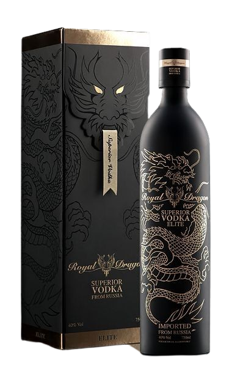
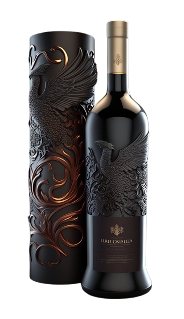
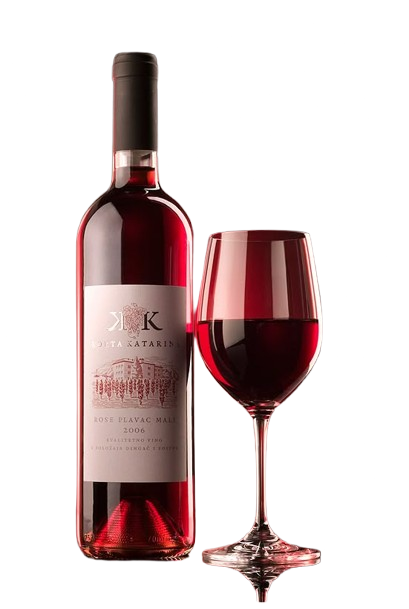
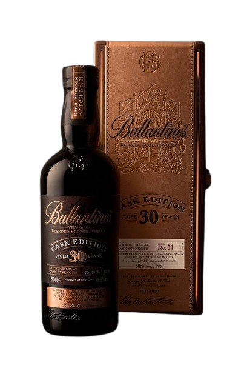
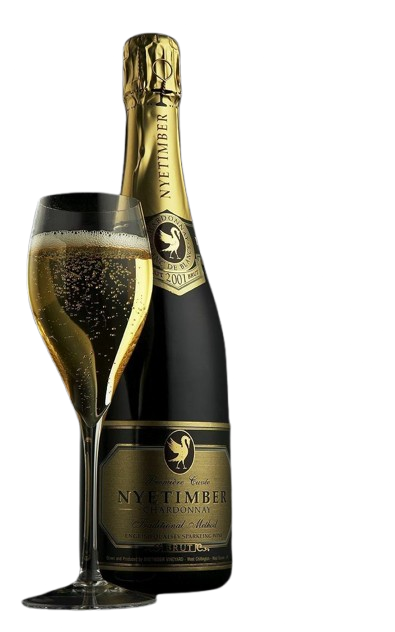

Velvet
Red Wines
Cabernet Sauvignon – Bold and full-bodied, famous for its deep color, high tannins, and notes of blackcurrant, green pepper, and oak aging.
Red Wine
ed wines are made from dark-colored grapes and are known for their rich, bold flavors.
Cabernet Sauvignon is a full-bodied red with dark fruit flavors like blackcurrant and hints of oak and tobacco.
It usually has an alcohol content of 13–15% and is served at 16–18°C.
Time surviving
1 hours
alcohol rate
alcohol: 13–15%, serve at 16–18°C.
Compatible
Die
Controlled
Touch

Seduction
Rosé Wine
Provence Rosé – Pale, elegant, and dry. Delicate flavors of strawberry, watermelon, and herbs.
Rosé Wine
Rosé wines get their pink color from brief contact with red grape skins.
Provence Rosé is light and dry,
Time surviving
3 hours
alcohol rate
alcohol: 11–15%, serve at 16–18°C.
Compatible
DIE
Controlled
sweet Touch
.png (1).png)
Temptation
Madeira
Cabernet Sauvignon – Bold and full-bodied, famous for its deep color, high tannins, and notes of blackcurrant, green pepper, and oak aging.
Madeira
offering peach and floral flavors,
while Pinot Grigio is zesty with green apple and lemon notes.
Time surviving
2 hours
alcohol rate
13–15%, serve at 16–18°C.
Compatible
randi roona
Controlled
Touch

Desire
RED Zinfandel
The world’s most famous sparkler. Complex layers of citrus, apple, brioche, and almond
White Zinfandel
White wines are made from green or yellow grapes and are usually crisp and refreshing.
Chardonnay is versatile and full-bodied, with flavors of apple, pear,
and sometimes buttery oak, usually 13–14% alcohol.
Time surviving
6 hours
alcohol rate
alcohol: 13–15%, serve at 16–18°C.
Compatible
taLK
Controlled
Touch

=
Obsession
Cabernet Sauvignon
The king of reds. Full-bodied with bold tannins, rich blackcurrant and plum
Cabernet Sauvignon
Sparkling wines are known for their bubbles and festive character.
Champagne (Brut) from France offers green apple and brioche flavors and is usually dry with 12–13% alcohol.
Prosecco,
Surviving Time
6 hours
alcohol rate
alcohol: 13–14%, serve at 15–18°C.
Compatible
SLEEP
Controlled
Touch

=
Euphoria
Pinot Noir
Elegant and light-bodied. Red fruit notes of cherry and raspberry with earthy undertones.
Pinot Noir
These wines are sweeter and often stronger in alcohol.
Port is a rich, sweet red wine with flavors of black cherry,
chocolate, and spice, fortified to 19–20% ABV.
Sherry is a Spanish fortified wine with nutty,
Surviving Time
6 hours
alcohol rate/p>
alcohol: 13–15%, serve at 16–18°C.
Compatible
ALSO RANDI ROONA
Controlled
Touch